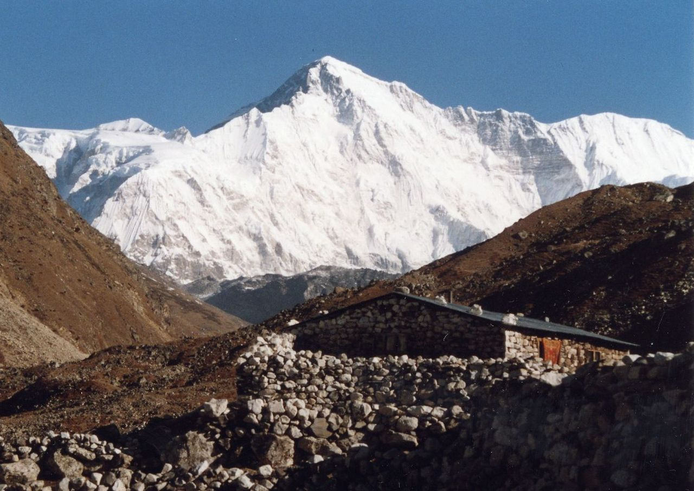

Top Nine Peaks in Nepal
For a relatively small country, Nepal has tremendous topographical diversity and presents amazing geographical features in the width expanse of only 230 kilometers from North to South. Landlocked by India on the south, east and west and by China in the north, Nepal contains the highest elevations in the world. The geographical difference in the country ranges from snowy mountain peaks touching the skies with elevations ranging from 5,357 meters of the Gokyo RI and the 8,848 meter of Mount Everest to the dry, arid and corroding desert-like terrain of Mustang with ash-like cliffs and mysterious mountain caves.
Let’s have a look at the top nine highest mountains of Nepal :
MOUNT EVEREST
Mount Everest, known in Nepali as Sagarmatha and in Tibetan as Chomolungma, is Earth's highest mountain above sea level, located in the Mahalangur Himal sub-range of the Himalayas. The international border between Nepal (Province No. 1) and China (Tibet Autonomous Region) runs across its summit point.
The current official elevation of 8,848 m (29,029 ft), recognized by China and Nepal, was established by a 1955 Indian survey and subsequently confirmed by a Chinese survey in 1975.[1] In 2005, China remeasured the rock height of the mountain, with a result of 8844.43 m (29,017 ft). There followed an argument between China and Nepal as to whether the official height should be the rock height (8,844 m., China) or the snow height (8,848 m., Nepal). In 2010, an agreement was reached by both sides that the height of Everest is 8,848 m, and Nepal recognizes China's claim that the rock height of Everest is 8,844 m.
MANASLU
Manaslu is the eighth highest mountain in the world at 8,163 metres (26,781 ft) above sea level. It is located in the Mansiri Himal, part of the Nepalese Himalayas, in the west-central part of Nepal. Its name, which means "mountain of the spirit", comes from the Sanskrit word manasa, meaning "intellect" or "soul".
Manaslu was first climbed on May 9, 1956 by Toshio Imanishi and Gyalzen Norbu, members of a Japanese expedition. It is said that "just as the British consider Everest their mountain, Manaslu has always been a Japanese mountain.
KANGCHENJUNGA

Kangchenjunga, also spelled Kanchenjunga, is the third highest mountain in the world. It lies between Nepal and Sikkim, India, with three of the five peaks (Main, Central and South) directly on the border, and the remaining two (West and Kangbachen) in Nepal's Taplejung District.
It rises with an elevation of 8,586 m (28,169 ft) in a section of the Himalayas called Kangchenjunga Himal delimited in the west by the Tamur River, in the north by the Lhonak Chu and Jongsang La, and in the east by the Teesta River.
Until 1852, Kangchenjunga was assumed to be the highest mountain in the world, but calculations based on various readings and measurements made by the Great Trigonometrical Survey of India in 1849 came to the conclusion that Mount Everest, known as Peak XV at the time, was the highest. Allowing for further verification of all calculations, it was officially announced in 1856 that Kangchenjunga is the third highest mountain in the world.
Makula
Makalu is the fifth highest mountain in the world at 8,485 metres (27,838 ft). It is located in the Mahalangur Himalayas 19 km (12 mi) southeast of Mount Everest, on the border between Nepal and Tibet, China. One of the eight-thousanders, Makalu is an isolated peak whose shape is a four-sided pyramid.
Makalu has two notable subsidiary peaks. Kangchungtse, or Makalu II (7,678 m) lies about 3 km (2 mi) north-northwest of the main summit. Rising about 5 km (3.1 mi) north-northeast of the main summit across a broad plateau, and connected to Kangchungtse by a narrow, 7,200 m saddle, is Chomo Lonzo (7,804 m).
DHAULAGIRI
The Dhaulagiri massif in Nepal extends 120 km (70 mi) from the Kaligandaki River west to the Bheri. This massif is bounded on the north and southwest by tributaries of the Bheri River and on the southeast by Myagdi Khola. Dhaulagiri I is the seventh highest mountain in the world at 8,167 metres (26,795 ft) above sea level, and the highest mountain within the borders of a single country (Nepal). It was first climbed on May 13, 1960 by a Swiss/Austrian/Nepali expedition.
Annapurna I (8,091m/26,545 ft) is 34 km. east of Dhaulagiri I. The Kali Gandaki River flows between the two in the Kaligandaki Gorge, said to be the world's deepest.[citation needed] The town of Pokhara is south of the Annapurnas, an important regional center and the gateway for climbers and trekkers visiting both ranges as well as a tourist destination in its own right.
LHOTSE
Lhotse (Nepali: ल्होत्से L'hōtsē [loːtsi]; Tibetan: ལྷོ་རྩེ, lho rtse) is the fourth highest mountain in the world at 8,516 metres (27,940 ft), after Mount Everest, K2, and Kangchenjunga. Part of the Everest massif, Lhotse is connected to the latter peak via the South Col.
Lhotse means “South Peak” in Tibetan. In addition to the main summit at 8,516 metres (27,940 ft) above sea level, the mountain comprises the smaller peaks Lhotse Middle (East) at 8,414 m (27,605 ft), and Lhotse Shar at 8,383 m (27,503 ft). The summit is on the border between Tibet of China and the Khumbu region of Nepal
CHO OYU
Cho Oyu (Nepali: चोयु; Tibetan: ཇོ་བོ་དབུ་ཡ) is the sixth highest mountain in the world at 8,188 metres (26,864 ft) above sea level. Cho Oyu means "Turquoise Goddess" in Tibetan. The mountain is the westernmost major peak of the Khumbu sub-section of the Mahalangur Himalaya 20 km west of Mount Everest. The mountain stands on the China-Nepal border.
Just a few kilometres west of Cho Oyu is Nangpa La (5,716m/18,753 ft), a glaciated pass that serves as the main trading route between the Tibetans and the Khumbu's Sherpas. This pass separates the Khumbu and Rolwaling Himalayas. Due to its proximity to this pass and the generally moderate slopes of the standard northwest ridge route, Cho Oyu is considered the easiest 8,000 metre peak to climb.It is a popular objective for professionally guided parties.
AMA DABLAM
Ama Dablam is a mountain in the Himalaya range of eastern Nepal. The main peak is 6,812 metres (22,349 ft), the lower western peak is 6,170 metres (20,243 ft). Ama Dablam means "Mother's necklace"; the long ridges on each side like the arms of a mother (ama) protecting her child, and the hanging glacier thought of as the dablam, the traditional double-pendant containing pictures of the gods, worn by Sherpa women. For several days, Ama Dablam dominates the eastern sky for anyone trekking to Mount Everest basecamp. For its soaring ridges and steep faces Ama Dablam is sometimes referred as the "Matterhorn of the Himalayas."
Ama Dablam was first climbed on 13 March 1961 by Mike Gill (NZ), Barry Bishop (USA), Mike Ward (UK) and Wally Romanes (NZ) via the Southwest Ridge. They were well-acclimatised to altitude, having wintered over at 5800 metres near the base of the peak as part of the Silver Hut Scientific Expedition of 1960-61, led by Sir Edmund Hillary.
ANNAPURNA
The Annapurna Sanctuary is a high glacial basin lying 40 km directly north of Pokhara. This oval-shaped plateau sits at an altitude of over 4000 metres,and is surrounded by a ring of mountains, the Annapurna range, most of which are over 7000 metres.
With the only entrance a narrow valley between the peaks of Hiunchuli and Machapuchare, where run-off from glaciers drain into Modi Khola River, the Sanctuary was not penetrated by outsiders until 1956. Because of high mountains on all sides, the Annapurna Sanctuary receives only 7 hours of sunlight a day at the height of summer.
The unique combination of heights and depths on the 5-7 day trek into the Annapurna Sanctuary give rise to an extraordinary variety of ecosystems. The south-facing slopes are covered in dense tropical jungles of rhododendron and bamboo, while the north-facing slopes, in the rain shadow, have a drier colder climate similar to that of the near-by Tibetan Plateau